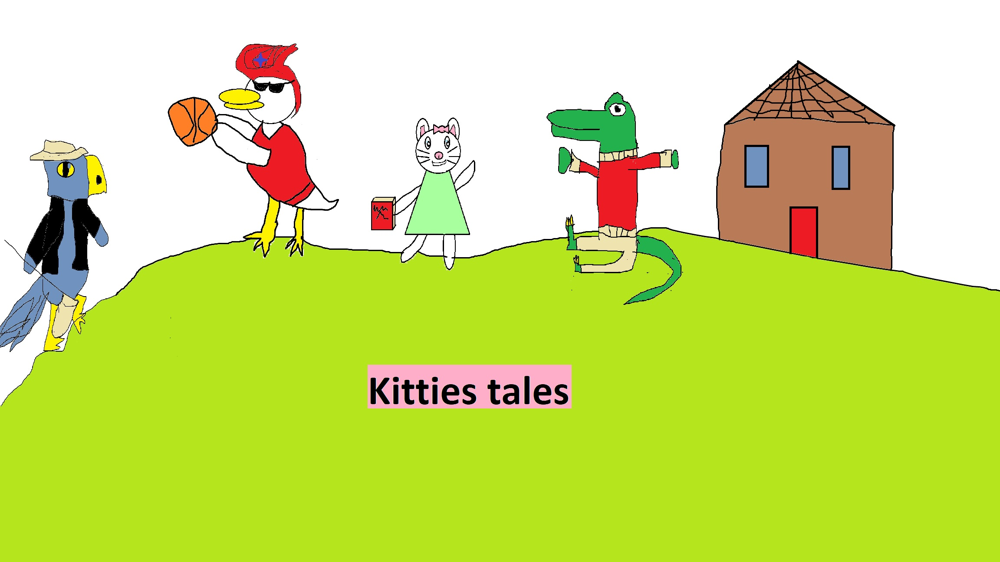

|
Kittie is an aspiring author, she tells her and her friends some magical stories as they`re sucked into the world of the books they read. They learn life lessons such as sharing, taking care of the things you own, and helping your friends out when they need a hand. They always come out smiling and laughing after their adventures. |
Kittie`s tales show review
|  |
Episode Summary |


Show info
Where to watch: You can stream Kitties tales on
Amazon prime
and Hulu
Show rating: Tv-y
Show tags: Comedy Fantasy
Review rating: 9/10